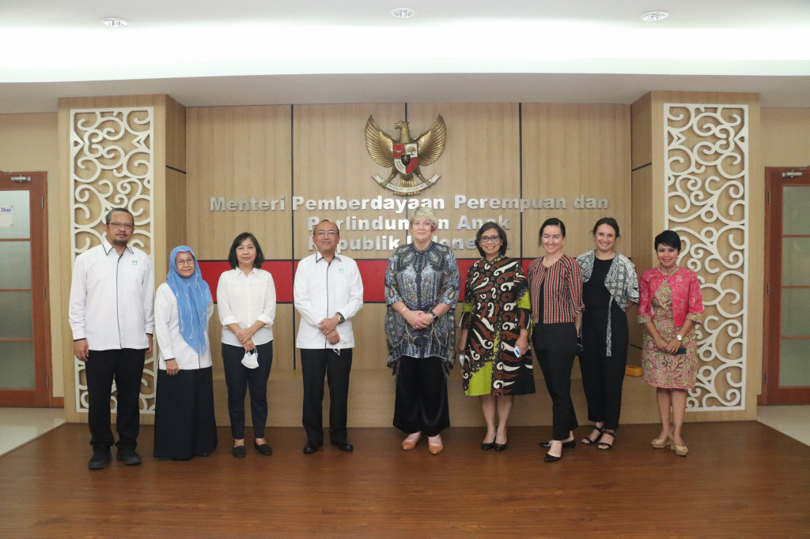
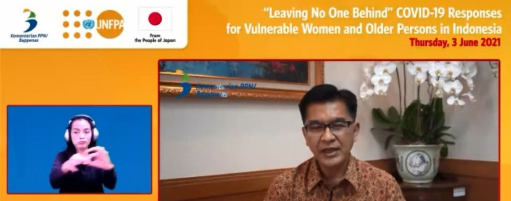
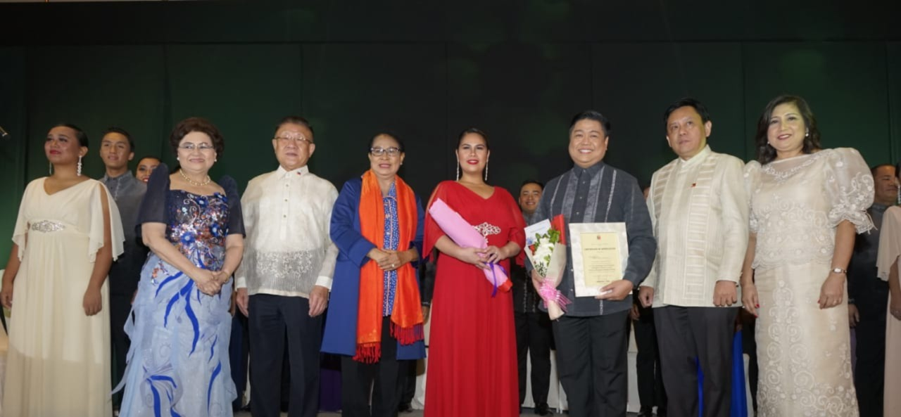

📋 Pengertian Kerjasama Bilateral
Kerjasama bilateral adalah bentuk kerjasama dua negara untuk mencapai tujuan bersama. Dalam konteks SDG 5 (Kesetaraan Gender), dua negara bekerja sama melalui program, pertukaran pengetahuan, dan dukungan teknis untuk meningkatkan kesetaraan gender di kedua negara.
Ciri-ciri kerjasama bilateral:
- Melibatkan dua negara atau lembaga
- Saling menguntungkan kedua belah pihak
- Fokus pada masalah atau tujuan spesifik
- Dapat mencakup pertukaran ahli, pendanaan, dan pelatihan
🤝 Contoh Kerjasama Bilateral Indonesia mengenai SDG 5
1. Indonesia-Australia: Program Pemberdayaan Perempuan dan Perlindungan Hak Asasi
Latar Belakang: Australia adalah salah satu mitra strategis Indonesia dalam pembangunan berkelanjutan. Kedua negara berbagi komitmen untuk meningkatkan kesempatan, keamanan, dan perlindungan perempuan di tempat kerja, pendidikan, dan kehidupan sosial melalui kerjasama bilateral yang komprehensif.
Periode Program: Ongoing bilateral cooperation dengan fokus khusus pada gender equality sebagai prioritas pembangunan.
Fokus Program Utama:
- Pelatihan Keterampilan: Program pelatihan keterampilan untuk perempuan di bidang teknologi, kewirausahaan, dan keahlian digital untuk meningkatkan ketenagakerjaan
- Program Beasiswa: Beasiswa untuk perempuan Indonesia untuk melanjutkan pendidikan tinggi dan pelatihan profesional di Australia
- Pertukaran Ahli: Pertukaran ahli di bidang kesetaraan gender, perlindungan perempuan, dan hak asasi manusia
- Penguatan Kebijakan: Dukungan untuk memperkuat kebijakan kesetaraan gender dan perlindungan perempuan di tingkat nasional dan lokal
- Penelitian dan Advokasi: Dukungan untuk penelitian tentang isu-isu gender di Indonesia dan advokasi kebijakan yang inklusif
Lembaga Terkait: Department of Foreign Affairs and Trade (DFAT) Australia, berbagai universitas Australia, dan organisasi masyarakat sipil.
Manfaat untuk Indonesia: Perempuan Indonesia mendapatkan akses ke pendidikan, pelatihan, dan keterampilan berkualitas tinggi yang meningkatkan peluang ekonomi dan pemberdayaan. Indonesia juga menerima dukungan teknis untuk mengembangkan kebijakan kesetaraan gender yang lebih kuat.
Manfaat untuk Australia: Memperkuat posisi Australia sebagai mitra utama dalam pembangunan berkelanjutan dan keamanan regional di Asia Tenggara.

2. Indonesia-Jepang: Program Kesehatan Reproduksi dan Kesetaraan Gender
Latar Belakang: Pemerintah Indonesia melaksanakan program kerja sama dengan United Nations Population Fund (UNFPA) Siklus ke-10 Tahun 2021-2025 yang mendapatkan dukungan penuh dari Pemerintah Jepang. Dukungan tersebut terwujud melalui dana USD 2.863.636 dari Pemerintah Jepang.
Fokus Program (Three Zeros):
- Menghapus kematian ibu yang dapat dicegah
- Menghapus kebutuhan keluarga berencana yang tidak terpenuhi
- Menghapus kekerasan berbasis gender dan praktik berbahaya terhadap perempuan dan anak, termasuk perkawinan anak
Program Khusus "Leave No One Behind":
- Perlindungan dan akses layanan kesehatan terintegrasi bagi kelompok rentan (perempuan kepala keluarga, orang dengan disabilitas, lansia, orang dengan HIV/AIDS)
- Pencegahan dan penanganan kekerasan terhadap perempuan
- Dukungan khusus selama masa pandemi Covid-19
Manfaat: Indonesia mendapat dukungan dana dan teknis untuk menjamin keberlangsungan layanan kesehatan, perlindungan perempuan, dan populasi terpinggirkan. Jepang menunjukkan komitmen kuat dalam memastikan keamanan manusia serta perlindungan perempuan dan penduduk rentan di Indonesia.

3. Indonesia-Filipina: Kerjasama Pendidikan, Pemberdayaan Perempuan Muda, dan Pertukaran Regional
Latar Belakang: Indonesia dan Filipina adalah dua negara terbesar di Asia Tenggara yang menghadapi tantangan kesetaraan gender yang serupa, termasuk tingginya angka kekerasan berbasis gender, kesenjangan akses pendidikan, dan partisipasi terbatas perempuan dalam kehidupan ekonomi dan politik. Sebagai anggota ASEAN yang sama-sama berkomitmen pada SDGs, kedua negara memiliki peluang besar untuk saling belajar dan berbagi pengalaman.
Periode Program: Ongoing ASEAN bilateral cooperation dengan fokus pada pemberdayaan perempuan dan generasi muda.
Fokus Program Utama:
- Program Pertukaran Pelajar: Program pertukaran beasiswa untuk perempuan muda dari kedua negara untuk melanjutkan pendidikan tinggi dan penelitian di universitas terkemuka
- Pelatihan Kepemimpinan: Program pelatihan kepemimpinan intensif untuk perempuan muda di bidang sosial, bisnis, dan politik di kedua negara
- Pendidikan Inklusif: Sharing best practices dalam pengembangan kurikulum pendidikan yang inklusif dan anti-diskriminasi berbasis gender
- Penelitian Kolaboratif: Kerjasama dalam penelitian tentang tantangan kesetaraan gender spesifik di Asia Tenggara, termasuk dampak budaya dan ekonomi
- Organisasi Perempuan Muda: Dukungan untuk pengembangan organisasi perempuan muda dan jaringan advokasi di tingkat nasional dan regional
- Forum Dialog: Penyelenggaraan forum dialog dan konferensi tahunan untuk membahas isu-isu gender yang relevan bagi kedua negara
Lembaga Terkait: Kementerian Luar Negeri kedua negara, ASEAN Secretariat, universitas terkemuka, dan organisasi perempuan internasional.
Manfaat untuk Indonesia dan Filipina: Memperkuat pemberdayaan perempuan muda melalui pertukaran pengetahuan dan pengalaman. Membangun jaringan solidaritas regional yang kuat untuk advokasi kesetaraan gender di tingkat ASEAN dan internasional.
Manfaat Regional: Mempercepat pencapaian SDG 5 di Asia Tenggara dan menunjukkan komitmen ASEAN pada pembangunan berkelanjutan dan perlindungan hak asasi perempuan.
